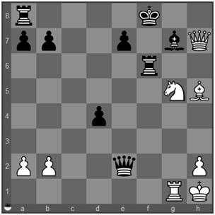

Libertação: Você concretiza o tema Liberação (Clearance) quando move uma de suas peças ou força (frequentemente através de um Sacrifício) uma peça do adversário a se mover ou ainda realiza uma captura para liberar uma casa, fila, coluna ou diagonal que ficará dominada ou será utilizada por outra de suas peças. O tema se subdivide, assim, em Liberação de Casa, de Fila, de Coluna e de Diagonal. Os três últimos casos são também chamados de Abertura de Linhas. Quando você move uma de suas peças de forma a que outra sua peça, posicionada atrás dela, passe a atacar uma casa ou peça do adversário, esse caso particular de Liberação é chamado de Ataque a Descoberto.

1... De5
2. Dh8+
O bispo negro previne a o controle da torre branca sobre a coluna "g" mas o sacrifício da dama branca
2... Bxh8
remove o bispo dessa coluna que fica parcialmente liberada.
3. Ch7#
Com um salto de cavalo, o branco libera completamente a coluna "g" para sua torre atacar as casas de escape do rei negro. O resultado é o xeque mate. 1-0
1. c4 Txb3
O negro objetiva promover o peão de "a3" e necessita remover o peão branco de "a2". Para isso, sacrifica a qualidade
2. axb3
e a coluna "h" é liberada
2... a2
possibilitando ao peão negro avançar para a promoção.
1... Rxd7
O branco poderia dar mate se sua dama estivesse em "a4" mas seu cavalo ocupa essa casa.
2. Cb6+
Movendo o cavalo e dando xeque
2... Re8
3. Da4#
O branco libera a casa "a4" para sua dama dar mate. 1-0